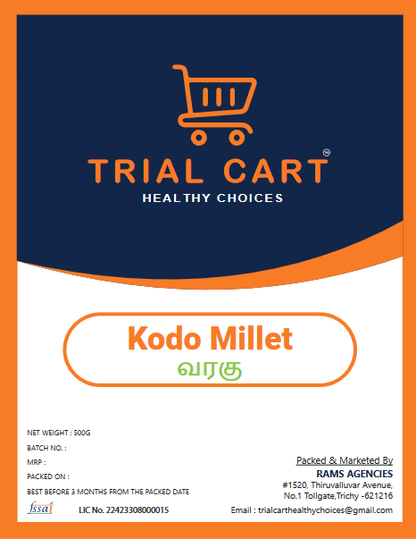

Products
-

Kattuyanam Rice
Kattuyanam Rice is a traditional and indigenous variety of rice grown in the Kattuyanam region of Tamil Nadu, known for its unique flavor and nutritional value.
-

Kodo Millet
Kodo Millet is a gluten-free, nutritious ancient grain that is widely grown and consumed in India, known for its high fiber content and low glycemic index.
-
Little Millet
Little Millet is a small, gluten-free grain that is commonly grown in India and other parts of Asia, known for its high nutritional value and versatility in cooking.